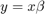

To run fconn_regression
Contents
Credit and date
Code developed by Oscar Miranda-Dominguez. Documentation started on July 13, 2018
Intro
This code was designed to fit linear models that using as input connectivity values can predict outcome.
This code consist on solving the equation , where is a vector of length corresponding to the observed outcomes and is a matrix of size , where is the number of connectivity values used for prediction. As in most of the cases will be larger than , ie the number of unknowns will be larger than the number of konwns, the problem will be and "ill-posed system" being prone to overfitting. For this reason the code solves the problem using regularization and cross-validation.
Inputs and outputs are robust enough such that the code can be used in multiple situations. This documentation includes the basic usage and a few examples that illustrate different typical cases.
Dependancies
Before using the code, make sure you have the functions this code needs:
Code in the airc:
/public/code/internal/utilities/OSCAR_WIP/fconn_stats/fconn_regression
Inputs
main_table: The predictor variables need to be formatted as a table of size , where the each row corresponds to the data for each case/observation. The first column corresponds to a label. This first column is ignored in this version, so you can use any label, but in the future this variable will be useful to implment mixed-effect models. The following columns correspond to the predictor variables.
within_headers: This is a table of size . The content of this table is used as headers for the main_table. If the number of unique headers is 1, all the predictor variables will be used in the model. If there are more than 1 unique labels/headers, the code will fit as many models as unique labels/headers provided. Each model will be fit using all the columns of each unique label/header.
y: vector of size %% n \times 1 $$ containing the predicted variables.
options: Here you can specify the options for the model:
- options.method: Available methods are plsr (default) and tsvd (partial least squares regression and truncated singular value decomposition, respectively).
- options.components: a number>0 indicating how many components to preserv when calculating plsr or tsvd (regularization). Default is 1.
- options.xval_left_N_out: Indicates how many samples are left-out for cross-validation of the model. Default is 0, ie no cross-validation
- options.N: a number >1 indicating how many times the data is partitioned to make cross-validation. Default is 1,000. To note, this code calculate the maximum number of combinations given the sample size (ie ) and the number of samples that will be left out (ie options.xval_left_N_out). If the number of requested repetitions is less than the total number of possible combinations, then options.N is reset to the maximum number of combinations to avoid repeated validations.
- options.N_Null: a number >1 that indicates how many times the data is shuffled to make a null hypothesis. The same parameters of the model are use for null data and predictions are compared for real assignments and null distribution.
- options.comparison_method: Options to calculate the p-value of the predictions after compared to the null. Options are kolmogorov (default) and cumulative. For kolmogorov, the reportet p-value corresponds to the p-value of the kolmogorov test for the comparison between the predictions and the null. For cumulative. The p-value is calculated based on the cumulative distribution of the null.
Outputs
- performance (out of sample performance): A cell with as many elements as models are fit. Each cell contains 4 performance indices for the alternative and the null hypotheses: I) R, correlation; II) mse, mean square error; III) mae, mean absolute error; IV) mean absolute positive error. Each performance index is calculated in out-of-sample data and is calculated based on the observed and predicted values.
- W: A cell with as many elements as models are fit. Each cell has an array of size that corresponds to the beta weights for each cross-validated replica () and each feature ().
- labels: a cell with as many elements as models are fit
- P: A cell sime size as performance with the p-values for each performance metric
Example 1. Using random data to fit a model
First we wil make random data to test the model
Fixing the seed of the random number generator for replicability
seed=10; rng(seed) % % Defining the number of predictor and predicted variables n=1000; % let say we have 10 observations m=15; % the model has m predictor variables % B=rand(m,1);% defining the true beta weights x=randn(n,m);% defining observations y=x*B; % predicted variable y=y; % adding noise % % Making the main table main_table=[table(repmat('Ct',n,1)) array2table(x)]; % % within_headers=cell(1,m); % within_headers(:)={'unique model'}; % within_headers=cell2table(within_headers) clc within_headers=table(repmat({'unique model'},m,1)); options.components=5; options.method='tsvd'; options.method='plsr'; [performance,Weights,labels,P]=fconn_regression(main_table, within_headers,y,options); % show mean of estimated beta weights mean(Weights{1}) % show real beta weigths B' % visualize the results pull_data_show_results(performance,Weights,labels,P) % To note, the last figure is only made to get the labes for the % distributions
ans =
Columns 1 through 7
0.7713 0.0208 0.6336 0.7488 0.4985 0.2248 0.1981
Columns 8 through 14
0.7605 0.1691 0.0883 0.6854 0.9534 0.0040 0.5122
Column 15
0.8126
ans =
Columns 1 through 7
0.7713 0.0208 0.6336 0.7488 0.4985 0.2248 0.1981
Columns 8 through 14
0.7605 0.1691 0.0883 0.6854 0.9534 0.0039 0.5122
Column 15
0.8126
Warning: Directory already exists.

Example 2
clear cd example_data\ load('fconn_regression_example2.mat'); cd ..
clear between_design between_design(1).name='CT'; n=length(y); for i=1:n(1) between_design(1).subgroups(i).name=ids{1}(i,:); between_design(1).subgroups(i).ix=i; between_design(1).subgroups(i).color=[1 1 1]*0; end within_design=[]; clear options options.boxcox_transform=0; options.calculate_Fisher_Z_transform=0; options.resort_parcel_order=[]; options.resort_parcel_order=[8 9]; [main_table, within_headers, options, r,c] = extract_NN_table(M1,parcel,between_design,within_design,options); within_headers_all_all=within_headers; % out=1; fconn_reg_options.components=3; fconn_reg_options.xval_left_N_out=out; fconn_reg_options.N=10000; [performance,Weights,labels,P]=fconn_regression(main_table, within_headers,y,fconn_reg_options); pull_data_show_results(performance,Weights,labels,P)
options =
struct with fields:
boxcox_transform: 0
calculate_Fisher_Z_transform: 0
resort_parcel_order: [9 8]
ix_sorting: [46×1 double]
correction_type: 'tukey-kramer'
save_figures: 1
display_figures: 1
plot_uncorrected_NN_other_factor: 0
p_th: 0.0500
show_y_scale: 0
show_p_value: 1
is_connectotyping: 0
avoid_main_table: 1
use_half_matrix: 0
Only 13 repetitions will be made since those are the unique combinations can be made given the partitions
Only 13 repetitions will be made since those are the unique combinations can be made given the partitions
Only 13 repetitions will be made since those are the unique combinations can be made given the partitions
Warning: Directory already exists.